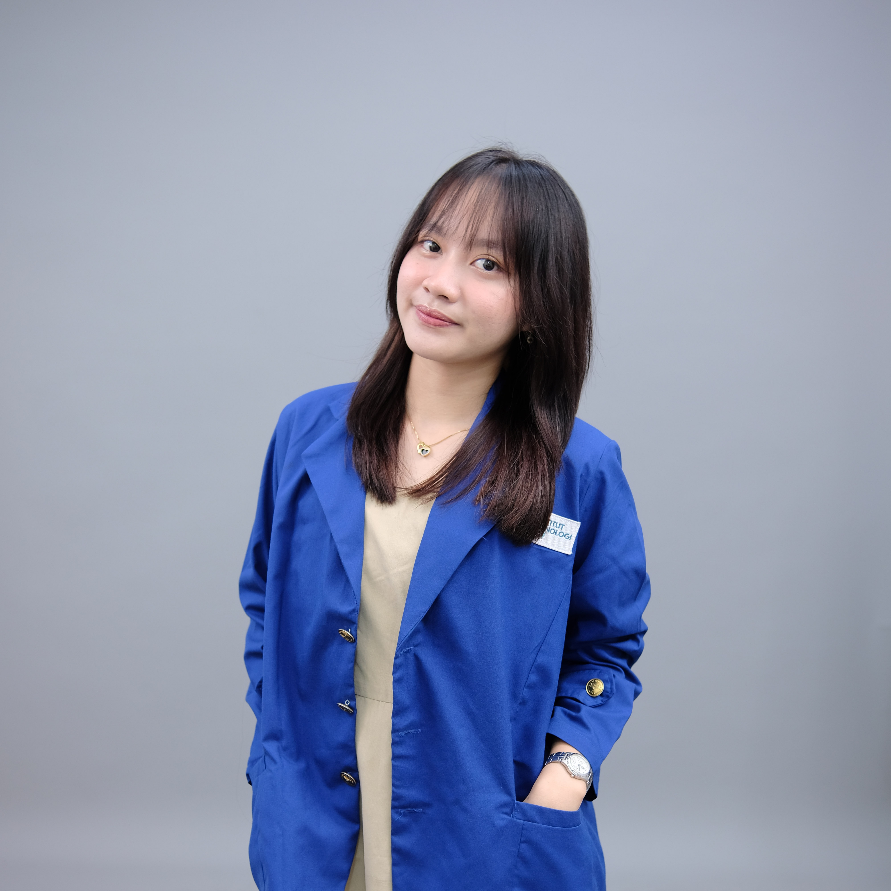

About me
A learner, builder, and collaborator.
I am Jenny Agustina Rahman, an Information Systems student at Institut Teknologi PLN, West Jakarta, with a strong interest in Data Analytics and Data Science.
I am particularly interested in the process of transforming data into information that supports better decisions. Through academic projects, laboratory teaching, organizational roles, and internship experience, I continue to develop my technical, analytical, communication, and leadership capabilities.

profile.jpg
Education
Institut Teknologi PLN
September 2024 – Present · Information Systems
GPA: 3.90 / 4.00
Recipient of a scholarship under the PLN Group Employment Bond Program, as part of a talent development initiative.
- Campus Ambassador, representing ITPLN in academic and public engagement activities.
- Supported dissertation research through systematic data annotation.
- Contributed to community service activities on Canva AI skills and financial literacy for vocational students.
Technical interests
Data Analytics & Data Science
Python, Pandas, data cleaning, missing-value handling, normalization, EDA, statistical analysis, visualization, and business analytics.
Machine Learning
Supervised and unsupervised learning, predictive modeling, train-test split, K-fold cross-validation, classification metrics, Naive Bayes, KNN, Decision Trees, and Random Forest.
Web & Mobile Development
HTML, CSS, JavaScript, Next.js, Flutter, and Dart through coursework and project development.
Database & Productivity
SQL database management, Microsoft Office, and Microsoft Office Specialist: Word Associate (Word and Word 2019).
Experience
Learning through real responsibilities.
August 2026 – Present
Assistant Laboratory — Information Retrieval Laboratory
Institut Teknologi PLN
- Supervise and assist students during Information Retrieval and data-related practical sessions.
- Deliver practical instruction on data and information processing.
- Guide students through practical exercises and problem-solving.
July 2026 – Present
Vice Program — Green Impact Festival Project
Society of Renewable Energy Indonesia
- Coordinate festival program activities and align implementation with sustainability goals.
- Support renewable energy solution showcases for more than 500 participants.
June 2026 – September 2026
Staff Pendukung — Pusat Data dan Informasi
Kementerian Dalam Negeri
- Developed and implemented data collection and analysis protocols.
- Reported a 20% increase in data processing speed and 15% reduction in errors through automated validation tools.
April 2026 – Present
Staff — Project Management Department
Muda-Mudahan ID
Supported project execution as on-ground crew, coordinated with team members, and helped maintain timely project deliverables.
December 2025 – September 2026
Student Ambassador
Institut Teknologi PLN
Presented academic programs and admission pathways to prospective students and parents through school visits, open days, and outreach activities.
January 2026 – September 2026
Student Admission — Marketing & Admissions
Badan Pemasaran dan Admisi ITPLN
Conducted outreach and presentations to communicate academic offerings, admission criteria, and enrollment processes.
March 2025 – April 2025
Editor — E-Magazine
Institut Teknologi PLN
Edited manuscripts and coordinated the editorial workflow from planning and review through proofreading and publication.
Organizational experience
Director of Public Relations
Society of Renewable Energy ITPLN · Oct 2026 – Present
Guides branding and community outreach teams, develops public relations strategy, and oversees digital communication planning.
Head of Branding Marketing
ITPLN Media · Jul 2026 – Present
Builds external relationships, coordinates partnership initiatives, and supports MoU discussions and communications.
Social Media Marketing Specialist
Society of Renewable Energy ITPLN · Sep 2025 – Sep 2026
Prepared content calendars, TOC proposals, and coordinated photoshoot activities.
Social Media Marketing Specialist
ITPLN Media · Oct 2024 – Jul 2026
Developed social media concepts, content plans, and coordinated talent for content production.
How I contribute
I combine analytical thinking with practical execution: understanding a problem, organizing the data, building or improving a solution, and communicating the result with a team.
I value continuous learning, clear collaboration, responsible use of technology, and projects that create measurable value.
Download CV ↗